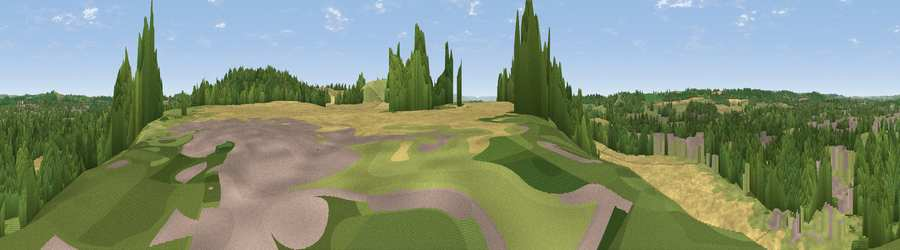

Viewpoint near Alcester
#34022 in England · top 80% of its area beats it · near AlcesterThe view, rendered

A 360° render of this exact spot computed from the terrain model, tree cover and land cover — summer colours, afternoon light, calibrated against photographs of famous viewpoints. Real trees, hedges and buildings will differ in detail.
The panorama
Grey silhouette: terrain skyline in each direction (720 bearings, Earth curvature and refraction included). Dashed green: skyline with trees (+15 m) and buildings (+8 m) as obstacles. Blue strip: how far the ground is visible on each bearing.
Where the view opens
Wedge length = distance to the farthest visible ground on that bearing (vegetation-aware). Rings at 10, 25 and 50 km.
What fills the view
35% cropland · 31% woodland · 29% grassland · 5% built-up
Angular shares of the visible panorama (visual magnitude), not map area. Landscape diversity 0.54 (0–1 Shannon).
Key numbers
More beautiful places nearby
The staircase of upgrades: each row has a higher view potential than everything closer. Driving times are estimates from straight-line distance, calibrated against real road routing — check an actual route before setting out.
| Place | Direction | Drive | Score |
|---|---|---|---|
| Viewpoint near Exhall | SSE · 1 km | ~3 min | 62.1 |
| Viewpoint near Arrow | WSW · 4 km | ~8 min | 63.1 |
| Lodge Hill | NNE · 6 km | ~12 min | 64.0 |
| Rous Lench Hill | WSW · 8 km | ~16 min | 64.2 |
| Viewpoint near Lenchwick | SW · 11 km | ~22 min | 66.0 |
| Viewpoint near Meon Vale | SE · 14 km | ~25 min | 77.0 |
| Broadway Hill | S · 20 km | ~34 min | 77.7 |
| Viewpoint near Elmley Castle | SW · 20 km | ~34 min | 80.5 |
52.20508, -1.86789 · source: screening · position refined by local search. Computed location — check access rights before visiting.